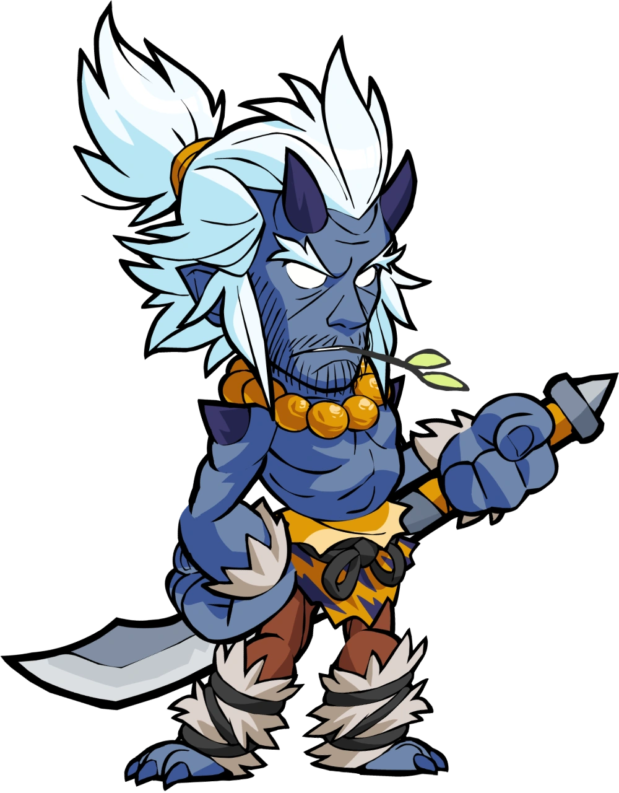
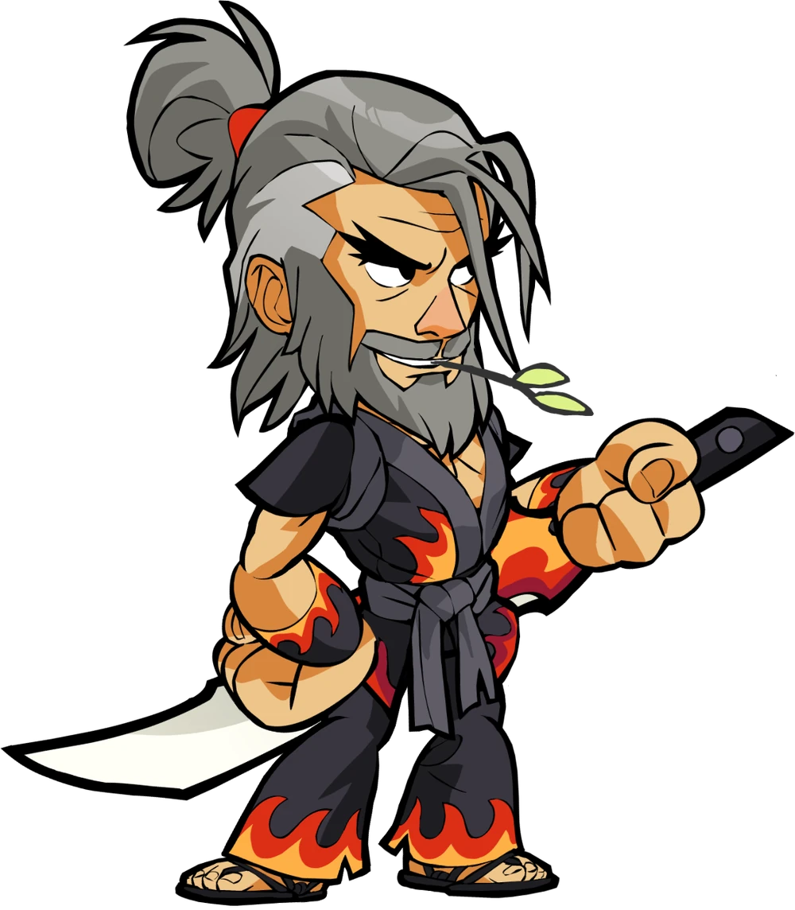
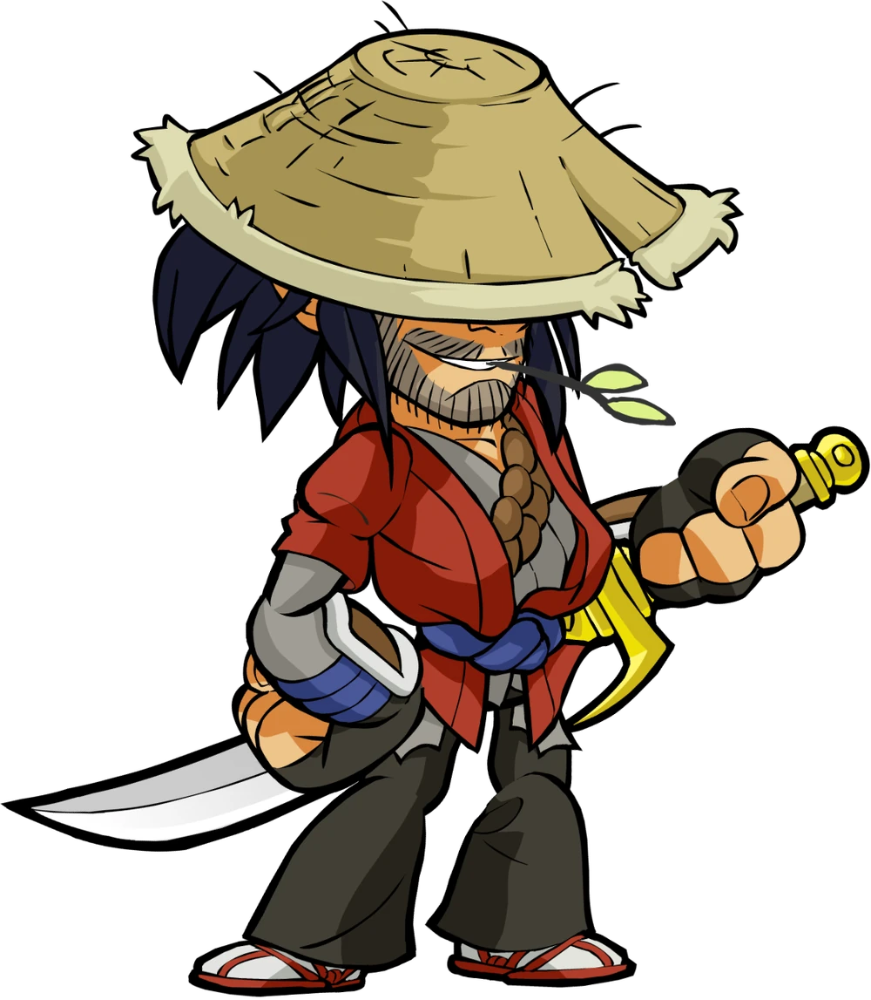
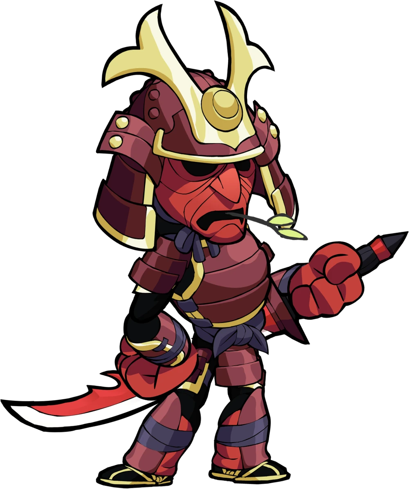
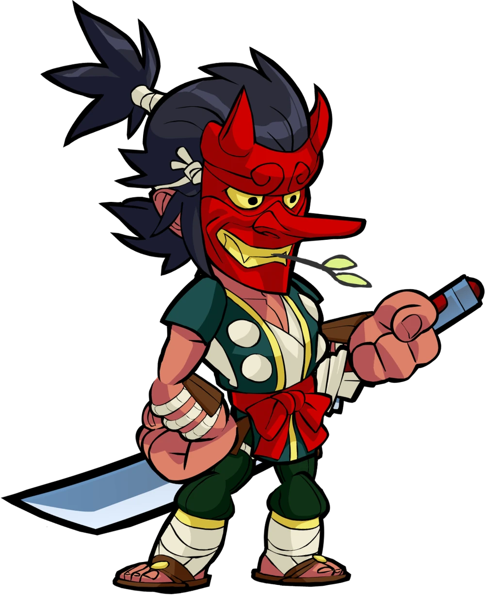
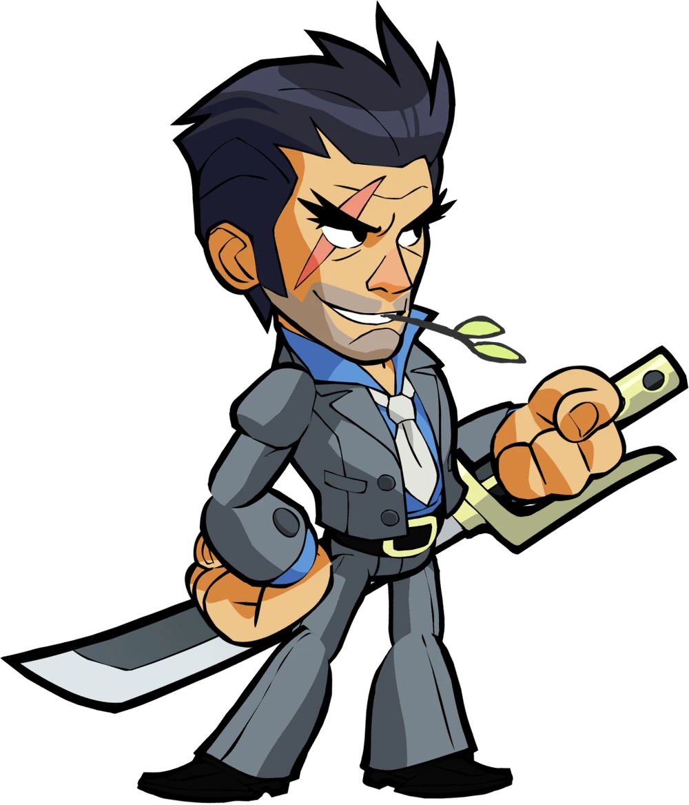
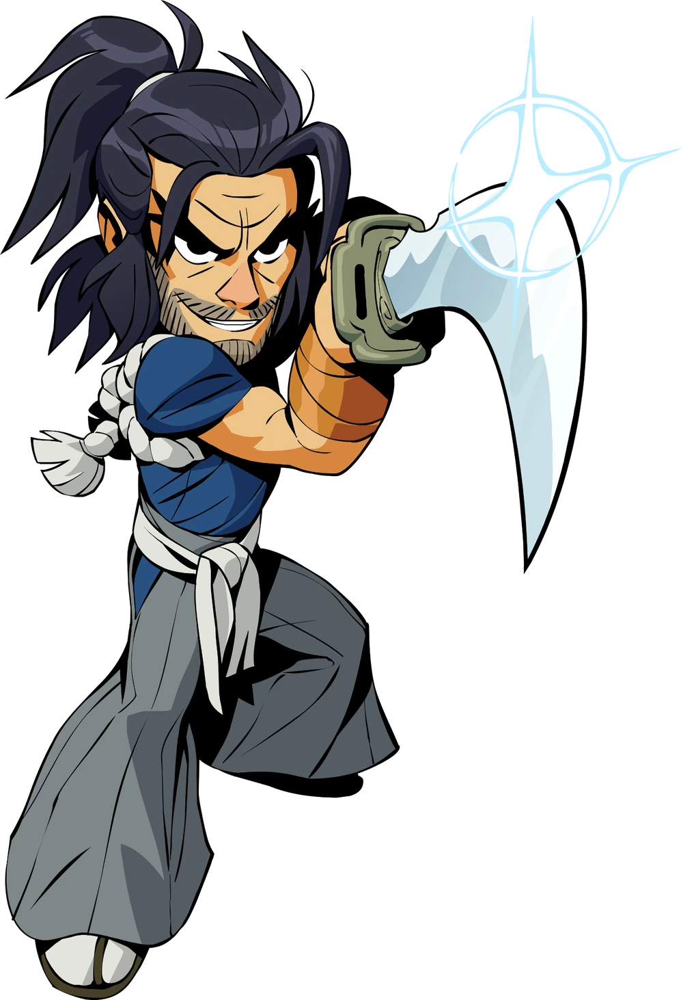
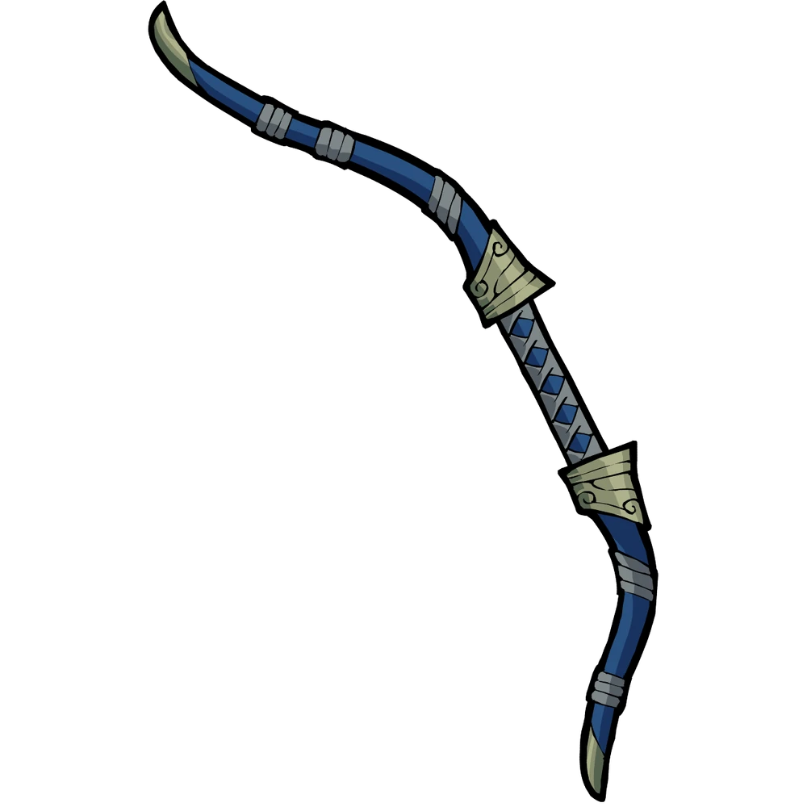
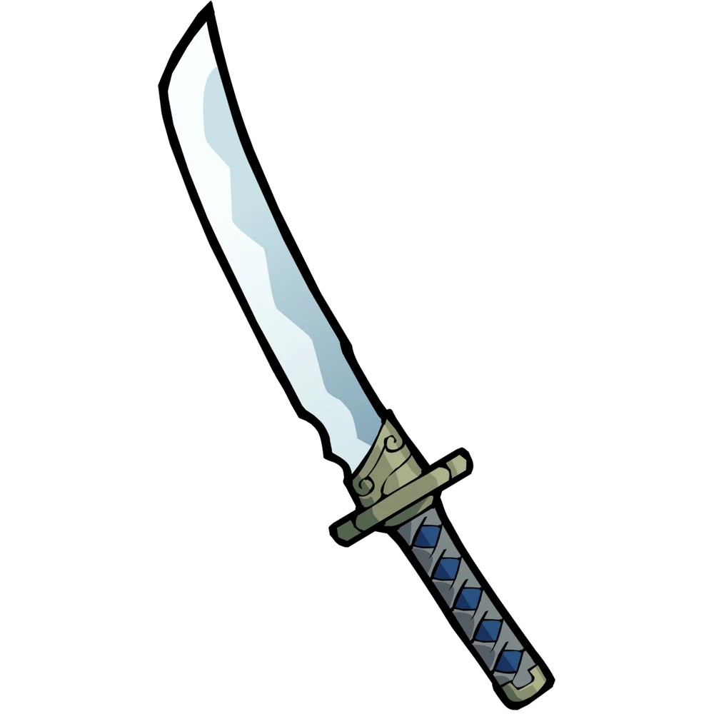

Strength
5/10
Samurai wardrobe

Demon Ogre Koji
This skin reimagines Koji as a fearsome creature from Japanese folklore. It transforms the noble samurai into a blue-skinned Oni (demon ogre), blending his disciplined swordsmanship with supernatural terror.
Theme: Mythological / Dark Fantasy
Store Blurb: "The terror that could have been."

Ojiisan Koji
This skin portrays an older, more seasoned version of the Legend Koji. The name "Ojiisan" (Japanese for "grandfather" or "elderly man") reflects his aged appearance.
Cost: 140 Mammoth Coins
Store Description: "Old age and treachery wins out every time."

Ronin Koji
This skin features Koji as a masterless samurai, wearing a large straw hat (jingasa) that shadows his face, a tattered red robe, and dark trousers. He is also shown with a small leaf in his mouth, a classic trope for a wandering warrior.
Cost: 140 Mammoth Coins
Store Description: "Wherever the winds and fortunes may take him. Apparently an early grave."

Shogun Koji
This skin depicts Koji as a high-ranking military commander. He is clad in traditional red and gold samurai armor, including a distinctive helmet with golden horns and a protective face mask. He maintains his signature look with a small leaf held in his mouth.
Cost: 140 Mammoth Coins
Store Description: "Forged in fire of war. Quenched in blood of enemies. Valhalla is home."

Tengu Koji
This skin features Koji wearing a traditional red Tengu mask with a long nose. He is dressed in a dark green and white outfit with a bright red bow at the waist and bandages wrapped around his forearms.
Cost: 140 Mammoth Coins
Store Description: "Ka kaw! Ka kaw!"

Yakuza Koji
This skin depicts an elderly version of Koji with grey hair and a long grey beard. He wears a dark martial arts gi featuring orange and yellow flame patterns.
Cost: 140 Mammoth Coins
Store Description: "Old age and treachery wins out every time."
The legend of Koji

The Wanderer, Honor's Blade
"For years we knew him in every back alley and gambling house across the empire.
Disarmingly humble, good gambler, only a few of us could see the fierce purpose
in his eyes."
– Katsu the Blind
"Well, I killed her demon husband. So...it's complicated."
– Koji, when asked about the ninja Hattori
As the story Goes...
As the second son Koji knew he would never take over his father’s school or inherit
the coveted family sword. He spent his days determined to make his own technique,
one without a silly made up name.
One day that changed. Fearful of the “School of the Demon Slaying Sword” a corrupt Shogun
ordered Koji’s father and all his students slain. To save their legacy, Koji was ordered
to take ancestral katana and flee, keeping it safe at all costs.
After many patient and careful years he was ready. Seeking an audience with the Shogun
he revealed his name and petitioned to reinstate his family’s place. The twisted Shogun
only laughed. Knowing his fate was sealed, Koji leapt across the hall and cut him down.
The stunned chamber guards fell next.
As Koji caught his breath, the palace alarm sounded. A slight man with red eyes walked out
of the shadows. Introducing himself as a fellow second son, the younger Kagima offered
Koji a way out. Power untold and a guaranteed escape, and all he needed to do was part
with the family blade. Koji examined the sword, remembering the stories his father
told him as a child. He smiled.
When the 3,000 guards entered the chamber they found the demon’s head lying on the floor
and Koji rushing toward them, cutting his path to Valhalla.
weapon

This is Koji's default Bow skin. It features a traditional Japanese curved design with a blue body, elegant gold accents, and a wrapped grip for a classic samurai aesthetic.

This is Koji's default Sword skin. It is a classic katana featuring a curved silver blade, a traditional crossguard (tsuba), and a diamond-patterned grip (tsuka-ito) in blue and grey.
Character stats
Speed
5/10
Defense
4/10
Dexterity
8/10